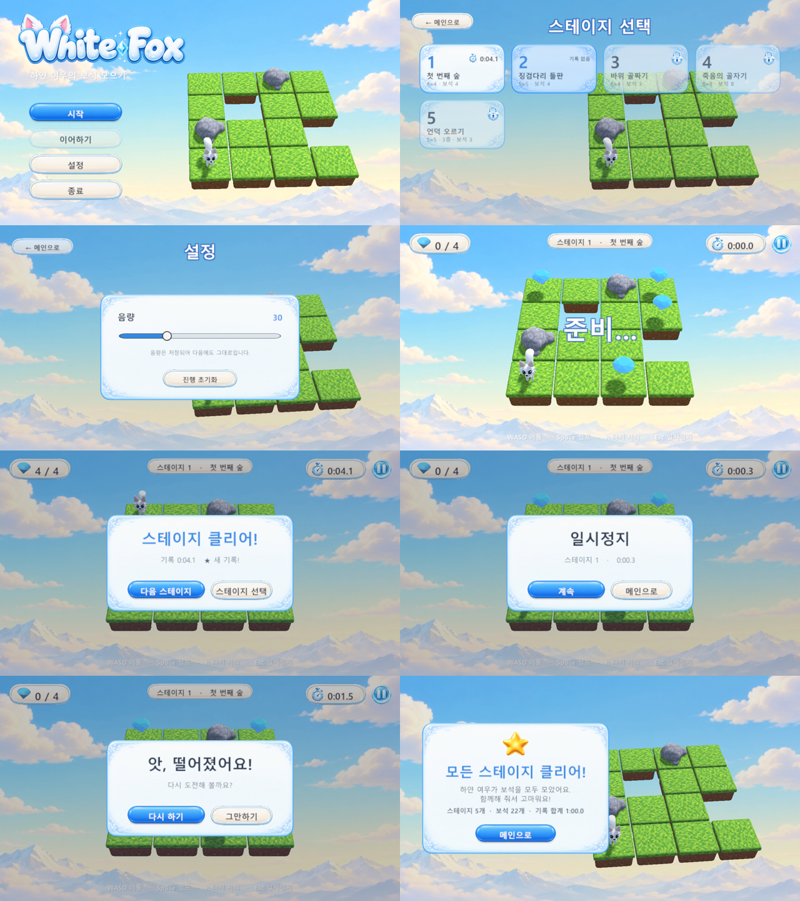
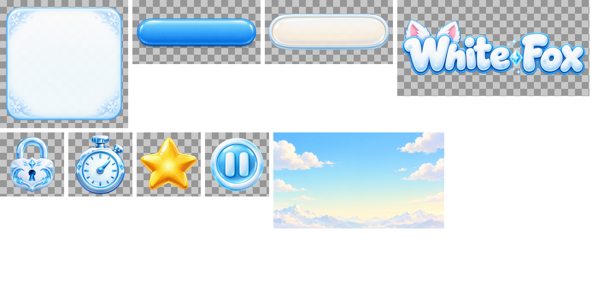

메인 → 스테이지 선택 → 게임 → 엔딩으로 이어지는 화면을 만듭니다. 어느 화면에서든 메인으로 돌아갈 길이 있고, 게임 종료는 메인에서만 합니다. 진행(해금)과 최고 기록, 음량은 저장됩니다.
↩ 엔딩, 일시정지의 "메인으로", Fail의 "그만하기"는 모두 메인으로 돌아옵니다. 종료는 메인에서만.
그림에 없던 세부는 아래처럼 정했습니다. 모든 버튼은 마우스로 누르거나, 방향키로 고르고 Enter로 누를 수 있습니다.
| 항목 | 내용 |
|---|---|
| 씬 | Menu(메인·스테이지 선택·설정·엔딩, 빌드 첫 씬) + Main(게임·일시정지·결과). 화면 이동은 SceneFlow 한 곳에서. |
| 저장 | SaveData: 해금된 스테이지 수, 스테이지별 최고 기록, 음량. Windows PlayerPrefs에 JSON으로. |
| 기록 키 | 스테이지마다 id를 둡니다. 맵툴로 저장하면 자동으로 생기고, 아직 없는 파일은 이름을 대신 씁니다. 그래서 맵툴에서 스테이지 순서를 바꿔도 기록이 따라갑니다. |
| UI | 지금 게임 UI처럼 코드로 만듭니다. 공통 모양(패널, 버튼, 글꼴)은 UiKit으로 모아 메뉴와 게임이 같이 씁니다. |
| 맵툴 | "이 스테이지로 플레이"는 지금처럼 게임 씬으로 바로 들어갑니다. 결과 창의 버튼으로 메뉴 씬에 갈 수 있습니다. |
테스트가 각 화면을 지나가며 찍은 화면입니다. 왼쪽 위부터 메인, 스테이지 선택, 설정, Ready, Clear, 일시정지, Fail, 엔딩.

ChatGPT 계정으로 Codex 이미지 생성을 써서 만들었습니다. 모두 투명 PNG이고, 패널과 버튼은 늘려도 모서리가 찌그러지지 않게 9-slice 테두리를 넣었습니다. 원본은 art/ui_original, 게임에서 쓰는 파일은 Assets/Textures/UI/gen에 있습니다.
